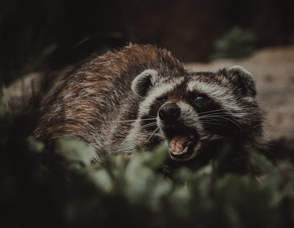

CharactéristiquesLes raton-laveurs sont des mammifères omnivore d'Amérique du Nord mais aussi introduit en Europe dans la fin des années 30.Leur nom vient du fait qu'ils "nettoyent" leur nourriture avant consommation. En terme de taille, l'animal fait en moyenne 80cm pour 4 à 9 kg, les males étant plus imposants que les femelles. |
|
|  |
FamilleLes ratons en terme général font parti du genre "Procyon", un néologisme issu du grec et signifiant "pré-chien".Les Procyon possèdent des pouces non opposables et sont connus pour, couplé à leur intellignece, utiliser ces derniers afin de survivre dans divers environements. |
RépartitionOriginaire d'Amérique du Nord, introduits en Europe dans les milieux plutôt forestiers et les régions agricoles sur un territoire de 1km² mais pouvant monter jusqu'à 50 km² |